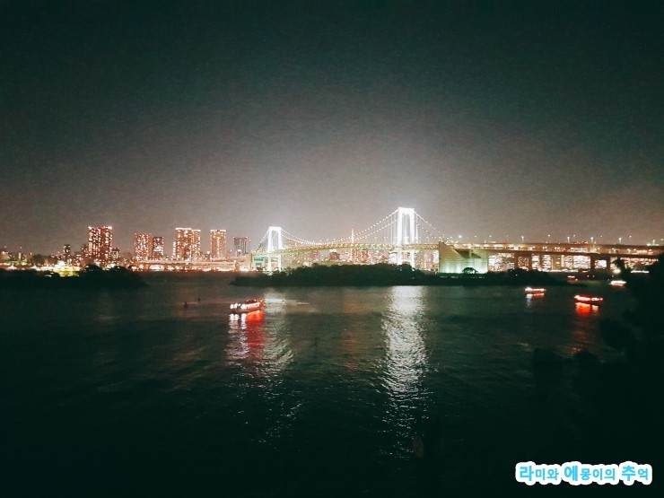
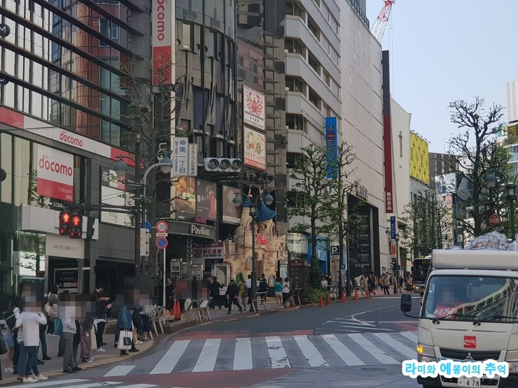
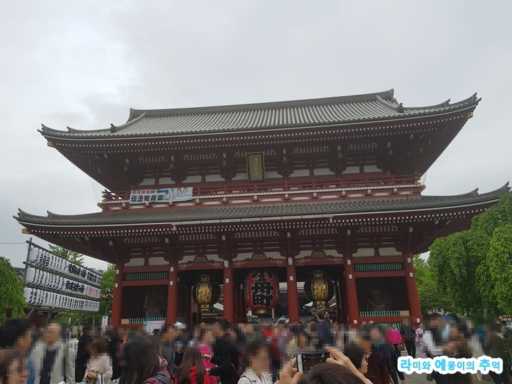

-

Odaiba(お台場) 멋진 야경을 가진 곳으로 많은 쇼핑센터, 테마파크와 함께 조각상 및 건축물들이 다수 있어서 이곳의 사진이 포함되어야 도쿄 다녀왔구나 라고 말할 정도로 꼭 방문해야하는 곳입니다.
-

Shibuya(渋谷) 도쿄를 대표하는 상업지구로 쇼핑과 젊음의 거리입니다. 시부야109, 히카리에, 마크시티, 모디 등많은 쇼핑센터가 존재합니다. 사실 그 많은 곳들을 구경한다는 건 불가능하죠. 취향에 따라서 원하는 곳만미리 정보를 모아 고르고방문하는 것을 추천합니다.
-

Sensoji(浅草寺) 도쿄 현대식 건물만 즐비한 거리는 한국과 다르기는 하지만 비슷하잖아요. 센소지 와서 진짜 일본에 왔다는 느낌이 도쿄라는 느낌 팍팍 받았어요.
-
 Ueno Park(上野公園) 1924년에 조성된 우에노 공원입니다은 도쿄 도심지에 위치한 크고 오래된 공원입니다. 학창시절 교과서에 보았던 로댕 조각들도 만날 수 있습니다.
Ueno Park(上野公園) 1924년에 조성된 우에노 공원입니다은 도쿄 도심지에 위치한 크고 오래된 공원입니다. 학창시절 교과서에 보았던 로댕 조각들도 만날 수 있습니다.